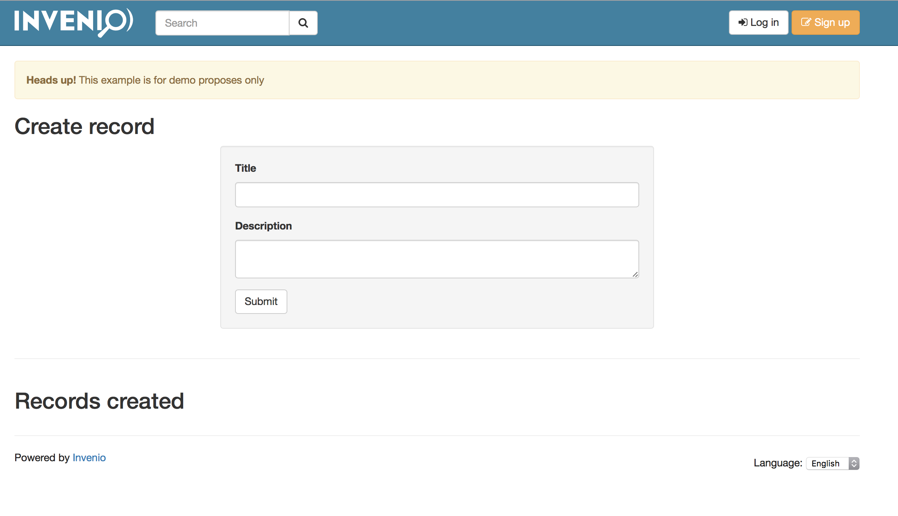
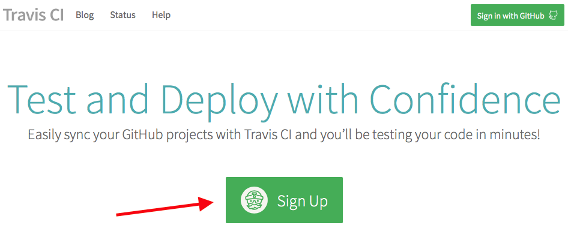
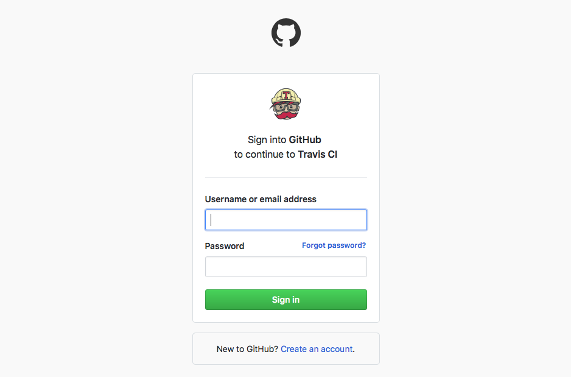
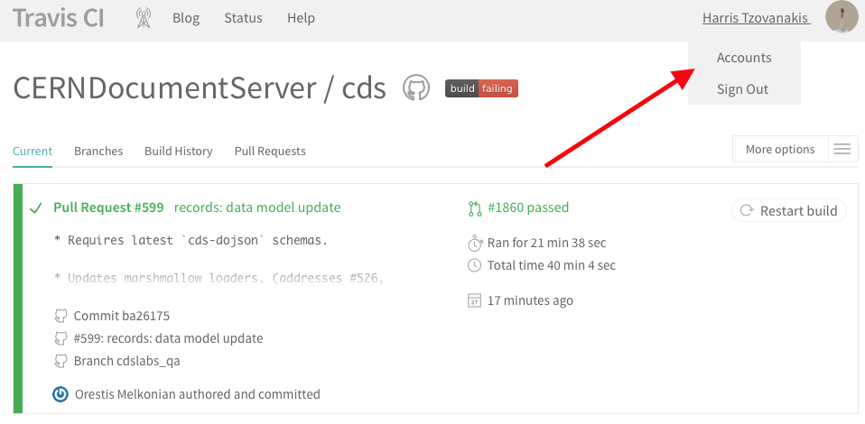

Before we begin
https://github.com/inveniosoftware/iugw2017/tree/master/0-prerequisitesInitialize Vagrant with iugw2017-demositewithcustomdata-web.box
$ sudo mount /dev/sdb1 /mnt
$ vagrant box add -n iugw2017-demosite-web /mnt/iugw2017-demositewithcustomdata-web.box
Edit your Vagrantfile
$ vagrant destroy
# Vagrantfile for IUGW2017.
Vagrant.configure("2") do |config|
if Vagrant.has_plugin?("vagrant-cachier")
config.cache.scope = :box
end
config.vm.define "web" do |web|
web.vm.box = "iugw2017-demositewithcustomdata-web"
....
end
end
end
$ vagrant up
IUGW17
Develop
Developer guide
The goal of this tutorial
Create module for Invenio v3
We will touch the following:
- How to create a new view
- How to create a form
- How to add a utility function
- How to add new templates
- How to use Jinja2
http://invenio.readthedocs.io/en/iugw2017/developersguide/tutorial/develop.html
Open the following link
Stop any running Invenio
$ killall invenio
$ workon invenio
$ cd ~
Bootstrapping with cookiecutter
Install Cookiecutter
Create a module template:
$ pip install -U cookiecutter
$ cookiecutter https://github.com/inveniosoftware/cookiecutter-invenio-module.git
Fill the form with these values:
$ cookiecutter https://github.com/inveniosoftware/cookiecutter-invenio-module.git
project_name [Invenio-FunGenerator]: Invenio-Unicorn
project_shortname [invenio-unicorn]:
package_name [invenio_unicorn]:
github_repo [inveniosoftware/invenio-unicorn]:
description [Invenio module that adds more fun to the platform.]:
author_name [CERN]: Nice Unicorn
author_email [info@inveniosoftware.org]: nice@unicorn.com
year [2017]:
copyright_holder [Nice Unicorn]:
copyright_by_intergovernmental [True]: False
superproject [Invenio]:
transifex_project [invenio-unicorn]:
extension_class [InvenioUnicorn]:
config_prefix [UNICORN]:
This initializes the Invenio-Unicorn module.
Install, run and test
Install the module
$ cd ~/invenio-unicorn
$ pip install -e .[all]
-efor development (no need to reinstall).to install the current directory[all]to install all the requirements- equivalent to
[docs,tests]
Run the tests
First, initialize a git repo and update the MANIFEST.in file (used during installation)
$ git init
$ git add -A
$ check-manifest -u
Run the tests
Run the tests and cross fingers
$ ./run-tests.sh
Run the example app
First, cd in the examples:
$ cd examples
$ ./app-setup.sh
$ ./app-fixtures.sh
$ export FLASK_APP=app.py FLASK_DEBUG=1
$ flask run
Run the example app
The example is running at http://192.168.50.10
Terminate the server and run this command to clean everything (DON'T FORGET TO DO IT)
$ ./app-teardown.sh
$ cd ..
Build the documentation
From the root folder of your module
$ python setup.py build_sphinx
Documentation is built into docs/_build/html
Before going further!
Create an empty GitHub repository...
Before going further!
Commit the empty module and create a branch:
$ git remote add origin URL OF YOUR GITHUB REPO
$ git commit -am "first commit"
$ git push --set-upstream origin master
$ git checkout -b dev
Develop
Don't try this example on production!
Add a form
Add a form
Create the file ~/invenio-unicorn/invenio_unicorn/forms.pyAdd a form
paste on ~/invenio-unicorn/invenio_unicorn/forms.py
"""Forms module."""
from __future__ import absolute_import, print_function
from flask_wtf import FlaskForm
from wtforms import StringField, TextAreaField, validators
class RecordForm(FlaskForm):
"""Custom record form."""
title = StringField(
'Title', [validators.DataRequired()]
)
description = TextAreaField(
'Description', [validators.DataRequired()]
)
Troubles?
$ cp /vagrant/5-develop/invenio-unicorn/invenio_unicorn/forms.py ~/invenio-unicorn/invenio_unicorn/
Add views
Add views
Open the file ~/invenio-unicorn/invenio_unicorn/views.pyAdd views
replace on ~/invenio-unicorn/invenio_unicorn/views.py
"""Invenio module that adds more fun to the platform."""
from __future__ import absolute_import, print_function
from flask import Blueprint, redirect, render_template, request, url_for
from flask_babelex import gettext as _
from .forms import RecordForm
from .utils import create_record
blueprint = Blueprint(
'invenio_unicorn',
__name__,
template_folder='templates',
static_folder='static',
)
@blueprint.route("/")
def index():
"""Basic view."""
return render_template(
"invenio_unicorn/index.html",
module_name=_('Invenio-Unicorn'))
@blueprint.route('/create', methods=['GET', 'POST'])
def create():
"""The create view."""
form = RecordForm()
# if the form is valid
if form.validate_on_submit():
# create the record
create_record(
dict(
title=form.title.data,
description=form.description.data
)
)
# redirect to the success page
return redirect(url_for('invenio_unicorn.success'))
return render_template('invenio_unicorn/create.html', form=form)
@blueprint.route("/success")
def success():
"""The success view."""
return render_template('invenio_unicorn/success.html')
Troubles?
$ cp /vagrant/5-develop/invenio-unicorn/invenio_unicorn/views.py ~/invenio-unicorn/invenio_unicorn/
Add utils
Add utils
Create the file ~/invenio-unicorn/invenio_unicorn/utils.pyAdd utils
paste on ~/invenio-unicorn/invenio_unicorn/utils.py
"""Utils module."""
from __future__ import absolute_import, print_function
import uuid
from flask import current_app
from invenio_db import db
from invenio_indexer.api import RecordIndexer
from invenio_pidstore import current_pidstore
from invenio_records.api import Record
def create_record(data):
"""Create a record.
:param dict data: The record data.
"""
indexer = RecordIndexer()
with db.session.begin_nested():
# create uuid
rec_uuid = uuid.uuid4()
# add the schema
host = current_app.config.get('JSONSCHEMAS_HOST')
data["$schema"] = \
current_app.extensions['invenio-jsonschemas'].path_to_url(
'custom_record/custom-record-v1.0.0.json')
# create PID
current_pidstore.minters['custid'](
rec_uuid, data, pid_value='custom_pid_{}'.format(rec_uuid)
)
# create record
created_record = Record.create(data, id_=rec_uuid)
# index the record
indexer.index(created_record)
db.session.commit()
Troubles?
$ cp /vagrant/5-develop/invenio-unicorn/invenio_unicorn/utils.py ~/invenio-unicorn/invenio_unicorn/
Almost there
Add templates
Add templates
create.html
$ cp /vagrant/5-develop/invenio-unicorn/invenio_unicorn/templates/invenio_unicorn/create.html ~/invenio-unicorn/invenio_unicorn/templates/invenio_unicorn/create.html
Add templates
success.html
$ cp /vagrant/5-develop/invenio-unicorn/invenio_unicorn/templates/invenio_unicorn/success.html ~/invenio-unicorn/invenio_unicorn/templates/invenio_unicorn/success.html
Develop
now run on your terminal
$ invenio run -h 0.0.0.0
Now open on your browser
http://192.168.50.10/createDo you see that?
Push the code to GitHub
Prepare the commit
$ git status
$ # shows all the files that have been modified
$ git add .
$ # adds all the modifications
Run the tests
$ ./run-tests.sh
Commit your work
to save it into our Git repository
$ git commit -am "basic development"
Push the code on GitHub
We also need to push our dev branch
$ git push --set-upstream origin dev
Enable travis-cli and publish to GitHub
Configure travis-cli.org
Create an account
We need first to create an account on travis-cli.org.Create an account
Create an account
Configure travis-cli.org
Enable travis for your repo.Enable travis for your repo
Enable travis for your repo

Create a Pull Request (PR)
Create a Pull Request

Create a Pull Request